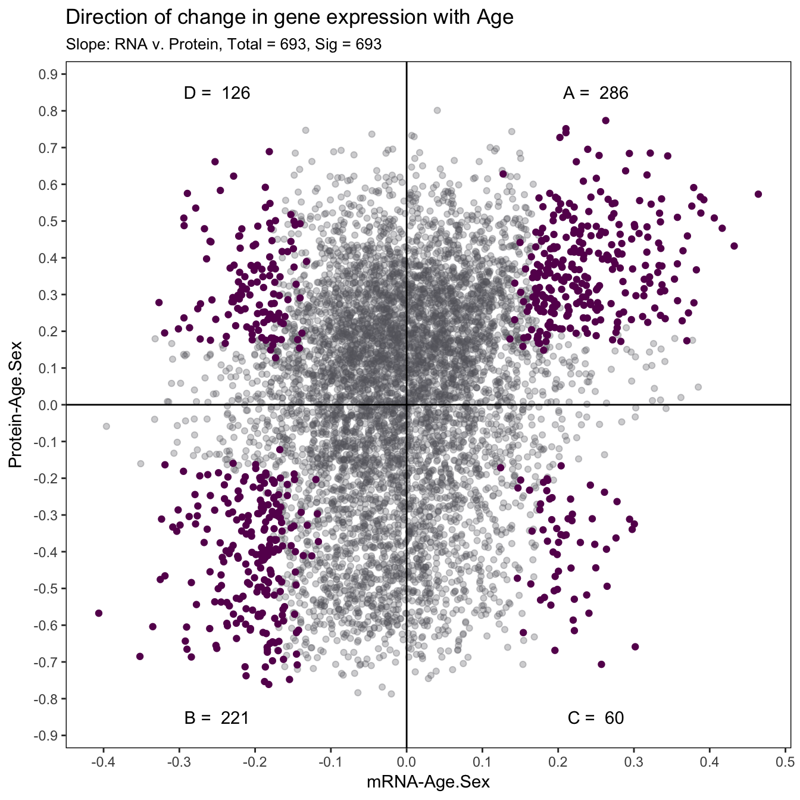
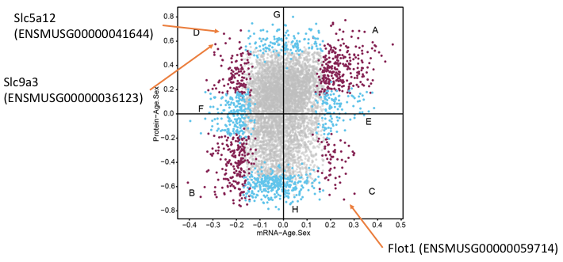
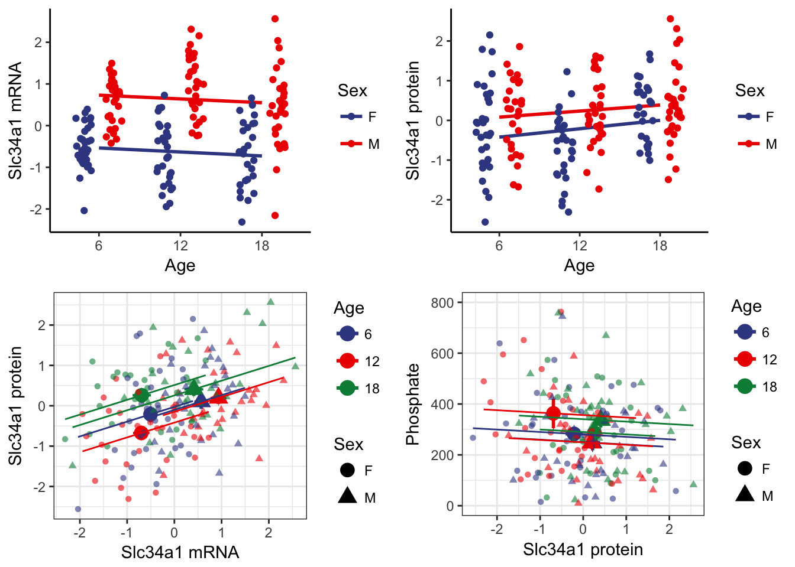
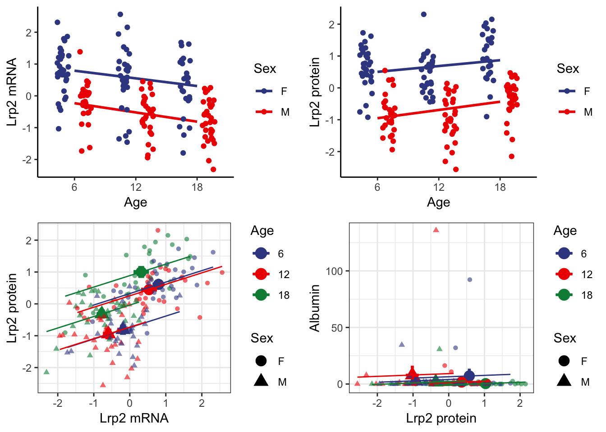
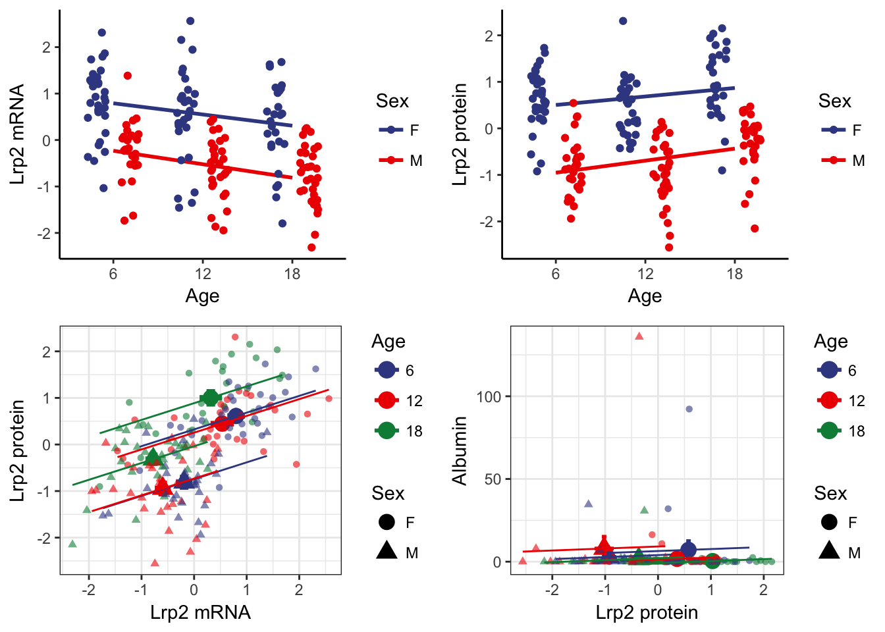

Analyses
Yuka Takemon
25 May, 2018
1 Calculating ANOVAs
For each gene that we have both mRNA and protein expression data, we fitted a linear model \[ y_{i} \sim Age + Sex + Generation \] We will be using the recorded slope and p-value from each mRNA and protein in the downstream processes.
1.1 Running ANOVA script
The following bash script is designed to submit the ANOVA R script to the cluster that utilizes PBS submission. You must submit the .Rdata and name the output file in this order. The .Rdata and Rscirpt can be found HERE (insert R script later)
Link to Rmd page
qsub -v I="./DO188b_kidney_noprobs.RData ./kidney_anova_slope_output.csv",script=anova_tests_slope_pairs Rsubmit_args.shThis will submit the R script to another script Rsubmit_args.sh, which will run the R script in the R environment within the allocated resource.
#!/bin/bash -l
#PBS -l nodes=1:ppn=3,walltime=03:00:00
# Usage:
# qsub -v I=${from list},script=${R script name} Rsubmit_multiple.R
cd /projects/korstanje-lab/ytakemon/JAC_DO_Kidney/Scripts/ANOVA
module load R/3.3.2
# I is the input variable
R --no-save --args ${I} < ${script}.R > ${script}.RoutLink to ANOVA histogram page
Link to direction of change page
2 Histograms of ANOVA p-values
For each gene that we have both mRNA and protein expression data, we fitted a linear model \[ y_{i} \sim Age + Sex + Generation \] and then tested the significance of the effects Age, Sex, and Age:Sex interaction. The figures below visualizes the distribution of the tests’ p-values and compares them between the effects Age, Sex, and Age:Sex interaction.
We found that the effect of sex on mRNA was stronger than the effects of Age, which is to be expected. However we saw that the proteins seem to be strongly affected by both sex and age, which we suspect is due to batch a effect that unfortunately coincided with the age of the samples (not 100% overlap).
Link to Rmd page
2.1 Effects on mRNA

2.2 Effects on protein

2.3 Effects of Age:Sex interaction on mRNA and protein

3 Direction of Change with Age
For each gene that we have both mRNA and protein expression data, we fitted a linear model \[ y_{i} \sim Age + Sex + Generation \] and then tested the significance of the effects Age and recorded its p-values and slope. For the 6667 genes for which we have both mRNA and protein expression data, we can illustrate the distinct changes in expression with age and identify those that are significant.
In our manuscript we analysed the significant quadrants, colored in purple below, using the Ingenuity Pathway Analysis (IPA) to identify enriched biological pathways. To see our findings please refer to our manuscript.
Link to Rmd page

Link to output file that will need to be incorporated
4 The Ecological Fallacy
Previously we showed how mRNA and protein expression changed with age. We want to highlight a few genes to explain what is known as “The ecological fallacy”, whereby total correlation is not the same as individual group correlation.

4.1 An example of Slc9a3
Slc9a3 was highlighted in our manuscript as a gene found to have decreasing mRNA but increasing protein with age. Slc9a3 is a gene that encodes for a Na/H exchange found on the brush boarder of the proximal tubule. Although the total changes show that Slc9a3 mRNA is decreasing with age and SLC9A3 proteins are increasing with age, we find that on a individual group level (by sex and age) they are similarly positively correlated.

Although for us Slc9a3 is a biologically interesting gene, it’s difficult to see the ecological fallacy. Below are some clear examples.
4.2 Best examples
We picked Slc5a12 and Flot1 as the best examples of this ecological fallacy.
Slc5a12 is an example whereby the mRNA expression decreased and the protein expression increased with age. As you can see there is not shift at 6 and 12 months, but at 18 months of age the average of the group shifts to the top right. The upward shift indicates that the protein expression increased but the leftward shift indicates the decrease of mRNA expression. Again, note that the individual group level are similarly positively correlated.
Flot1 is an example where by the mRNA expression increases with age and the protein expression decreases with age. You can observe the down and rightward shift of the lines with age. The downward shift indicates a decrease in protein expression, and a rightward shift indicates a increase in mRNA expression with age.

5 Relating to renal physiology
5.1 Slc34a1 and Phosphate

5.2 Slc34a3 and Phosphate

5.3 Lrp2 and Albumin

6 Session Information
sessionInfo()## R version 3.5.0 (2018-04-23)
## Platform: x86_64-apple-darwin15.6.0 (64-bit)
## Running under: macOS Sierra 10.12.6
##
## Matrix products: default
## BLAS: /Library/Frameworks/R.framework/Versions/3.5/Resources/lib/libRblas.0.dylib
## LAPACK: /Library/Frameworks/R.framework/Versions/3.5/Resources/lib/libRlapack.dylib
##
## locale:
## [1] en_US.UTF-8/en_US.UTF-8/en_US.UTF-8/C/en_US.UTF-8/en_US.UTF-8
##
## attached base packages:
## [1] stats graphics grDevices utils datasets methods base
##
## other attached packages:
## [1] bindrcpp_0.2.2 ggsci_2.9 gridExtra_2.3 forcats_0.3.0
## [5] stringr_1.3.1 dplyr_0.7.5 purrr_0.2.4 readr_1.1.1
## [9] tidyr_0.8.1 tibble_1.4.2 ggplot2_2.2.1 tidyverse_1.2.1
##
## loaded via a namespace (and not attached):
## [1] tidyselect_0.2.4 reshape2_1.4.3 haven_1.1.1 lattice_0.20-35
## [5] colorspace_1.3-2 htmltools_0.3.6 yaml_2.1.19 rlang_0.2.0
## [9] pillar_1.2.2 foreign_0.8-70 glue_1.2.0 modelr_0.1.2
## [13] readxl_1.1.0 bindr_0.1.1 plyr_1.8.4 munsell_0.4.3
## [17] gtable_0.2.0 cellranger_1.1.0 rvest_0.3.2 psych_1.8.4
## [21] evaluate_0.10.1 labeling_0.3 knitr_1.20 parallel_3.5.0
## [25] broom_0.4.4 Rcpp_0.12.17 scales_0.5.0 backports_1.1.2
## [29] jsonlite_1.5 mnormt_1.5-5 hms_0.4.2 digest_0.6.15
## [33] stringi_1.2.2 grid_3.5.0 rprojroot_1.3-2 cli_1.0.0
## [37] tools_3.5.0 magrittr_1.5 lazyeval_0.2.1 crayon_1.3.4
## [41] pkgconfig_2.0.1 xml2_1.2.0 lubridate_1.7.4 assertthat_0.2.0
## [45] rmarkdown_1.9 httr_1.3.1 rstudioapi_0.7 R6_2.2.2
## [49] nlme_3.1-137 compiler_3.5.0